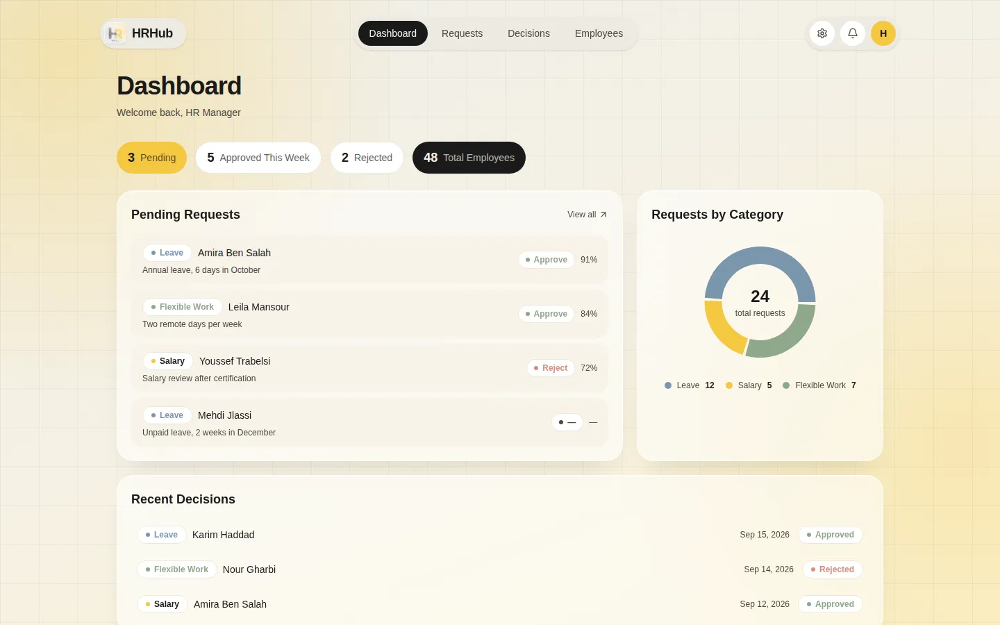

Project one · Built at Axia Solution
AI-assisted triage for HR requests. An n8n workflow reads the inbox, checks each request against policy and recommends a decision, and a person always makes the final call.

The HR dashboard. Screens show sample data.
Employees email their leave, salary or flexible-work requests the way they always have. An n8n workflow reads the inbox, sorts each request, checks it against company policy and the employee's record, and writes a recommendation with a confidence score and its reasoning.
I built it during my 2026 internship at Axia Solution in Sousse, working on the whole product: the n8n workflow, the AI agents, the web dashboard and the mobile app. HR reviews and decides in the dashboard or on the phone. Nothing is approved automatically: every decision waits for a person, and everything runs on local models, so no employee data leaves the network.
One design choice worth knowing: the small local model reliably calls only one tool per run. When policy search was a tool, the agent used it in 3 of 7 runs. So policy retrieval now runs on every request before the agent, and the agent keeps a single tool, the employee database.
Recording a full demo, from the email arriving to HR approving it, and adding screenshots of the n8n workflow and the mobile app.